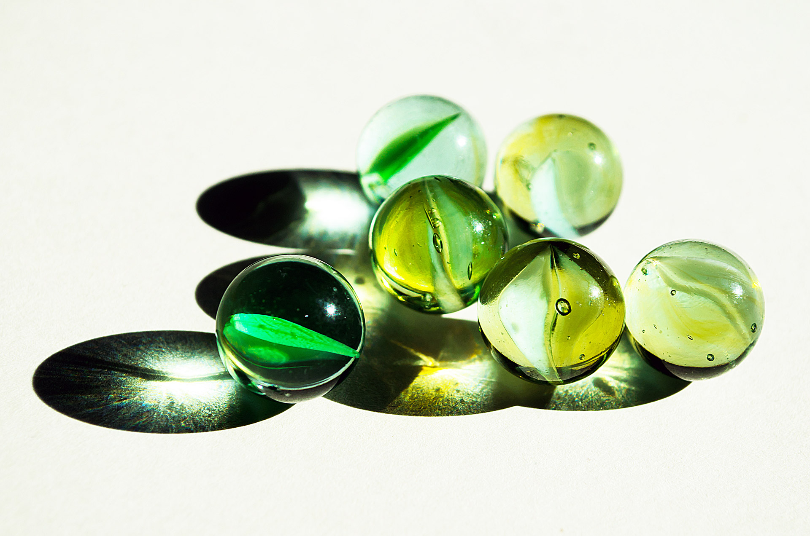

GOALS
This institution goals is basically to please our customers and people yet to purchase our goods and sercives.Different technicials and inspectors have inspected our goods and servives and give us the rating of (4.5).We assure and gaurantee our profident customers the best of the best.

This is one of our products"THE GREEN GLASS MARBLE" made in london.Very rare product we managed to get for our customers satisfaction. The green glass marble was imported from london to be available for all Nigerians,both our customers and people yet to purchase our goods and services.
INFO
Click on the REQUEST link to place ur orders. You will recieve a reply within next 10minutes to 5hours.
click on the CONTACT link to get our institution contact.On the contact page, our phone number, e-mail address is there for more enquires.
Click on SIGNUP link to give your data to our database to get the best of best services.
Click on the LOGIN link to get full pack service, discounts, tokens.On the login page,you can view updates on our goods and services.